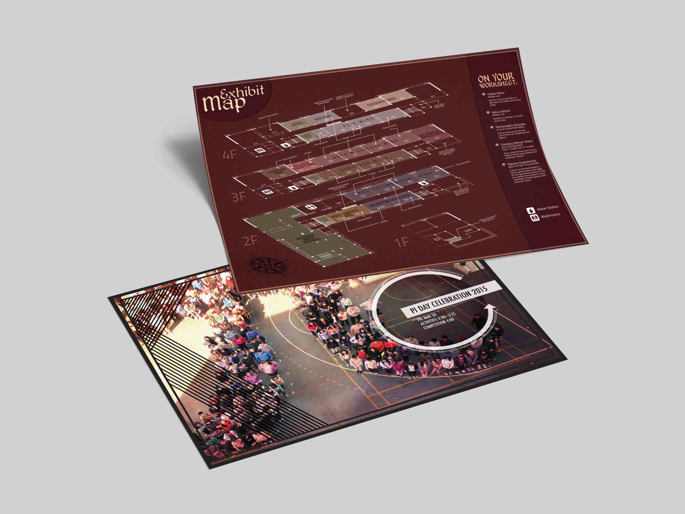

I served in many extracurricular design roles in high school, and it eventually caught the attention of the school administration. I was soon approached with requests from various departments to make designs for upcoming their upcoming events.
One project I worked on was a zine for our school's annual Arts Festival. The idea was to imitate something that might be found in a back alley, and we would make hundreds of copies of this on newspaper print and scatter them everywhere around the school.
The graphics were mostly made by underclassmen, but I touched up a few myself to fit the overall presence of the zine. The people involved were all from our own school community. Every student received their own copy, and the back of the zine has a schedule that they fill in themselves.
You can view the whole zine linked here.
In addition, I also worked on pieces for the math and history departments, for their respective annual events, Pi Day and History Day.
I was the head designer of our school newspaper back then, and we created a special insert for History Day. The exhibition map pictured was one of the pages included inside. I took our school fire escape plans, skewed them, and drew over them to make a map depicting where everyone's project displays will be. It was a huge project, but it was more than worthwhile watching it in use once it was done.
We also host a Pi Day event on March 14, and the photo used is actually our school community from the year before in the shape of a pi symbol. I kept text to a minimum on that one; it's easy enough to tell by the graphic that it's referring to Pi Day—especially in the context of ongoing school announcements at the time.
I made many other projects during high school, including our yearbook every year (and the primary yearbook one year on commission). In my senior year, the Science Fair fell on the same day as April Fools, and we reflected this on our corresponding newspaper issue. The whole issue was an imitation of a National Geographic magazine, with a giant picture of our science department head framed on the front cover. We went all out on that issue, too—all the articles were satires on science, formatted the same way as a NatGeo magazine, but that's a story for another day. I didn't include an image for any of these works out of privacy concerns, but feel free to reach out if you want to see more.
I fell in love with design in high school, but being able to work on projects like this made the work much more meaningful since they were actually being used in real life. Having this opportunity really helped me grow, as I was consistently challenged with different design projects—and even outside of freelance, in my time with extracurriculars such the school newspaper. Not only did I get hands-on practice with graphic design, I also got to learn new technical tools within the Adobe CC suite.
I would come to use many of the lessons and skills gathered from these experiences later on, such as cementing my fundamentals with my typography independent study final project, and in my future career with the World Scholar's Cup.